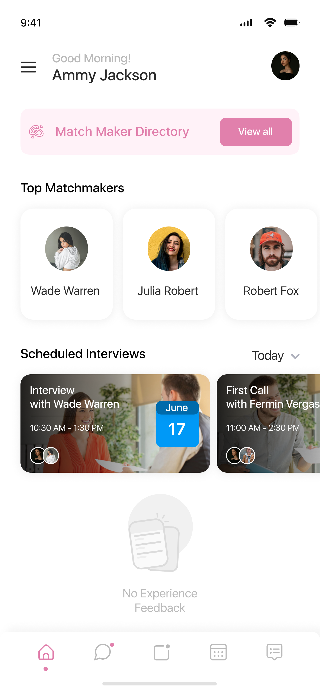

Complex products. Clear outcomes.
I design enterprise SaaS, commerce, and consumer products—from the first user flow to the system that ships.


Product systems · Mobile · SaaSWork that moved the product forward.
Strategy, flows, interfaces, and systems—shown in context, with the decisions and outcomes behind them.
 ↗
↗NortonLifeLock
Four security and family product lines aligned around clearer user journeys.
 ↗
↗Fabletics
Subscription checkout, loyalty, and a new product-line launch.
 ↗
↗Techstars
An investor-onboarding dashboard tailored to the team’s workflow.
↗OneHouse
Dashboard architecture and core flows for a new data-automation product.
Dater
A guided matchmaking system for discovery, introductions, chat, and feedback.
 ↗
↗Nester
One system spanning the marketing site, dashboard, and property reports.
 ↗
↗Katin
A modular storefront system built to replace slow one-off layouts.
 ↗
↗Oscars.org
The Academy’s public experience reorganized across three breakpoints.
 ↗
↗WatchBox
Custom Lightning pages designed around a luxury sales workflow.
I turn complexity into systems teams can ship.
I work across the full product arc—finding the right problem, mapping the experience, creating the interface, testing the decisions, and partnering through delivery.
Let’s build something clear.
Hiring for senior product design, UX leadership, or a complex redesign? I’d like to hear what you’re building.
betayards@gmail.com ↗